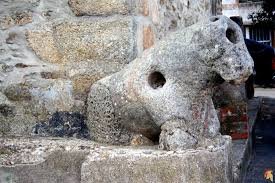
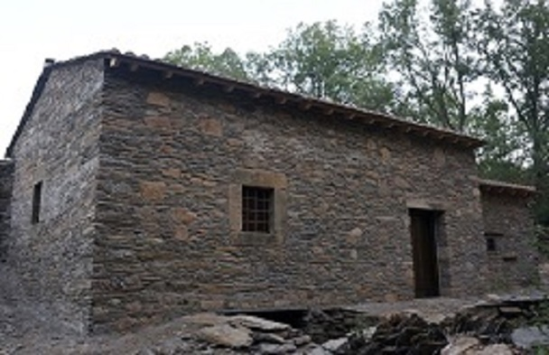
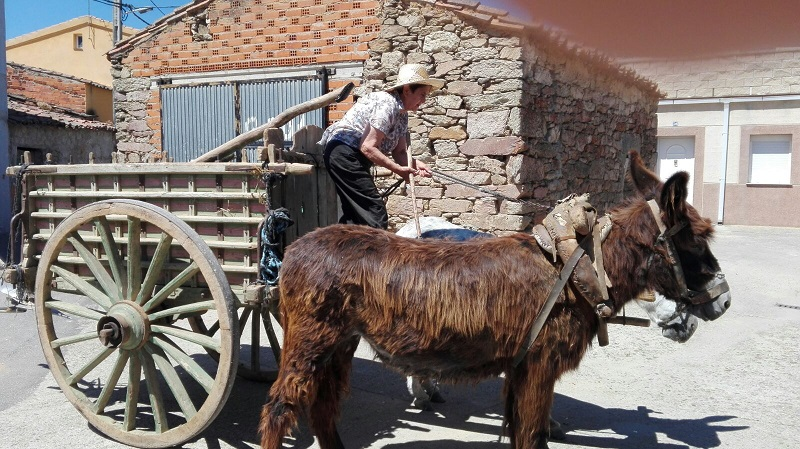

San Vitero es un pueblo que se encuentra en la comarca de aliste que a la vez tembien se encuentra cerca de la forntera con Portugal
San Vitero es un pueblo en el que todavia se encuentran restos arqueologicos, como por ejemplo un toro perromano y un miliario de la calzada romana del siglo XVII de Antonio que su funcion era de unir Asturias y Braccara Augusta, que cruzaba las comarcas zamoranas de la Carballeda y Alist. Pero a dia de hoy hay una pequeña pega y esque el milar que se encuentra en la plaza del pueblo no es el original por que la ruta pasaba por San Pedro de las Herrerias y seguia para cruzar el rio manzanas en Moldones hacia Portugal.
A dia de hoy tambien se pueden encontar en algunas casas de la actualidad restos de estelas romanos lo que confirma que estubieron los romanos en la localidad mencionada.
En la antiguedad en la localidad habia una fabrica de arinas de pequeño tamaño y su funcionamineto como el de cualquier otro era el de la fuerza del agua en movimiento que se encargaba de mover unos engranages, esos engranages estaban soldados a unas barras metalicas que se unian con dos piedras en trituraban el trigo conviertiendolo en arina.
Este molino era muy famoso y acudian gente de la zona con los típicos carros tirados por vacas, cargados con troncos o sacos de grano (trigo, centeno o cebada), desde numerosos pueblos de la comarca: desde Palazuelo-San Vicente a Sejas y desde Rabales a Nuez.
En esta imagen se puede apreciar como iva era entes el medio de transporte cuando el molino se encontraba en funcionamiento
En este video hablan un poco de las persoans que estan en esta localidad y de lo que hay mas o menos